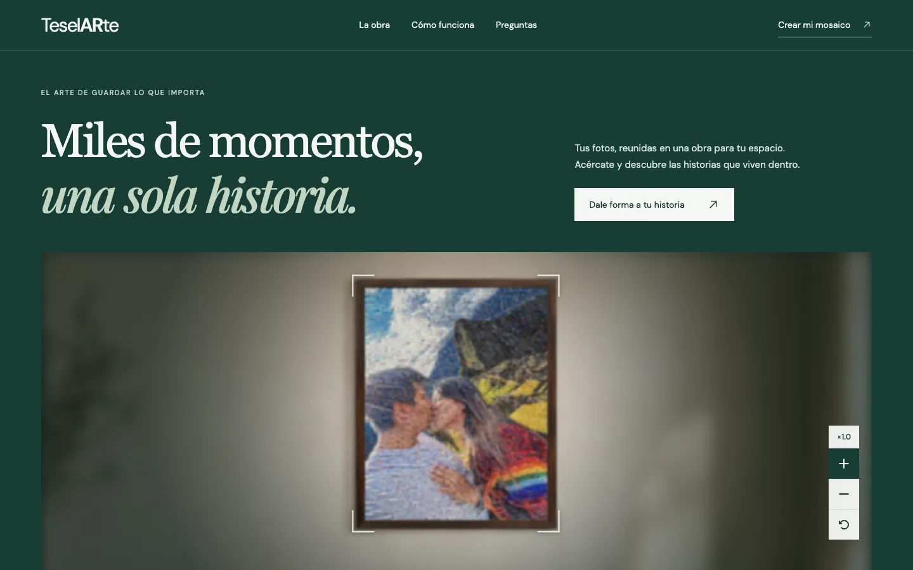
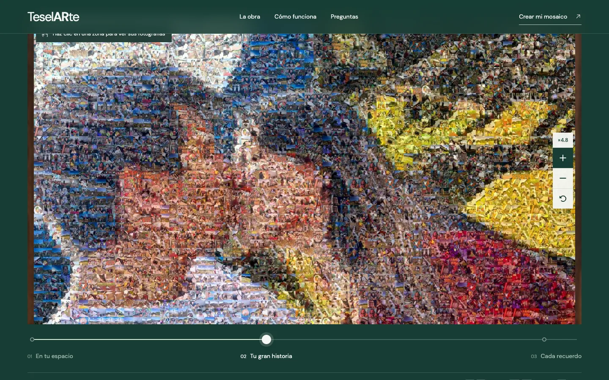

Mosaico Vivo: realidad aumentada en el navegador
El servidor localiza el cuadro y devuelve su posición. Después el teléfono sigue el movimiento con visión por computadora y superpone las fotos originales. Sin instalar una aplicación.
MVP completo
Convierte entre 50 y 300 fotos personales en un fotomosaico impreso que cobra vida al apuntarle con la cámara.

Miles de fotos se quedan guardadas en el teléfono. Imprimir una deja fuera todas las demás, y un collage no cuenta una historia.
Una imagen principal reconstruida con las fotos de la persona. De lejos se ve una escena; de cerca, cada recuerdo. Con la cámara, las fotos originales aparecen sobre el cuadro.
Un recorrido de compra completo, de las fotos al cuadro en la pared.
Una imagen principal y de 50 a 300 fotos en JPG, PNG, WebP o HEIC. Suben directo al almacenamiento, en paralelo.
Tres recortes comparan el original con los dos acabados disponibles: Natural y Color fiel.
Estilo, tamaño y marco. Inicio de sesión con Google y pago con Stripe.
Al confirmarse el pago, un worker produce el archivo final en sRGB a 300 DPI.
Un QR privado abre el visor: la cámara reconoce el mosaico y muestra encima las fotos originales.

El servidor localiza el cuadro y devuelve su posición. Después el teléfono sigue el movimiento con visión por computadora y superpone las fotos originales. Sin instalar una aplicación.
La página de inicio muestra el cuadro en una sala. Se puede acercar con rueda, gesto o teclado hasta ver cada fotografía.
Pedido anónimo que se reclama al iniciar sesión, pago, descarga y seguimiento. El pedido se retoma si se cierra la pestaña.
Natural conserva cada foto como es. Color fiel aplica un tinte local para acercarse a la imagen principal sin perder detalle.
Los originales se borran a los 7 días, la sesión de cámara dura 15 minutos y los cuadros de video nunca se guardan.
Verificación antes de la vista previa, enlaces firmados para subir archivos y sesiones con protección CSRF.
Antes de generar, un worker valida y normaliza cada imagen y detecta duplicados.
El navegador sube directo al almacenamiento; la API coordina pedidos y los workers hacen el trabajo pesado.
React 18 y Vite, con rutas de carga diferida, PWA, sala en Three.js y visor de cámara.
FastAPI con PostgreSQL y Redis. Sesiones por cookie, Google con PKCE y webhook firmado de Stripe.
Arman el mosaico, generan el archivo de impresión y preparan la experiencia de cámara con su QR.
Compatible con S3, con enlaces prefirmados. Los archivos no pasan por la API.
La parte difícil es que la realidad aumentada se sienta estable en un teléfono.
Localizar el cuadro es costoso; seguirlo no. El servidor responde una vez y el dispositivo mantiene la posición cuadro a cuadro con flujo óptico.
WebGL con atlas de texturas en escritorio y transformaciones CSS en móviles, con un presupuesto de cargas por cuadro para no trabar la cámara.
Antes del pago solo se muestran tres recortes. El mosaico completo se genera hasta que la compra se confirma.
La sala carga el mosaico a 480 px, luego a 1,200 px y solo las fotografías visibles al acercarse.
Un modo local sustituye solo el inicio de sesión y el pago. Subida, generación y archivo final usan el código real.
Es un proyecto privado. Escríbeme y agendamos una demostración.